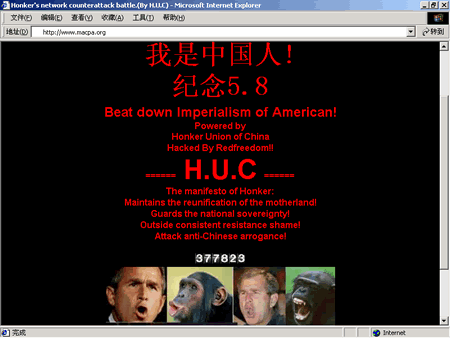

还记得2001年中美黑客大战吗？红客VS黑客
来源：天涯社区
背景简介
2001年04月01日，美国一架海军EP-3侦察机在中国海南岛东南海域上空活动，中方两架军用飞机对其进行跟踪监视。北京时间上午9时07分，当中方飞机在海南岛东南104公里处正常飞行时， 美机突然向中方飞机转向，其机头和左翼与中方一架飞机相撞，致使中方飞机坠毁，飞行员失踪。
4月1日，浙江湖州籍优秀飞行员王伟，以自己的青春和生命，捍卫了国家的主权和民族的尊严，在万里碧海蓝天，写下了当代军人对祖国的忠诚。
中美撞机事件发生后，中美黑客之间发生的网络大战愈演愈烈。自4月4日以来，美国黑客组织PoizonBOx不断袭击中国网站。对此，我国的网络安全人员积极防备美方黑客的攻击。中国一些黑客组织则在“五一”期间打响了“黑客反击战”!
2001:中美“黑客大战”始末
2001年5月9日晚７时，“中国红客联盟”在网上宣布：停止其对美“网络反击战”。至此，因中美“撞机事件”而引发的持续一周多的中美“黑客大战”，硝烟渐散……
(1/5/2001)
中国“黑客”开会部署攻击美国网站
（纽约法新电）一批中国电脑黑客前天通过互联网举行秘密会议，进行最后部署，准备对美国政府和商业网站发动长达一个星期的攻势。
这次由中国黑客组织“黑雁联盟”和“中国红客网络保安技术同盟”主持的会议，是通过私人频道“互联网转播闲谈”（Internet Relay Chat）召开的，这是一个允许使用者互相传送即时信息的网站。
参加会议须要事先批准的用户姓名和密码，法新社获准进入该频道了解开会的情况。
这次计划中的中美网络战预定星期一（昨日）展开，中国黑客称之为“红客”袭击。黑客们被要求“为了中国发挥自己的本领”。
会上讨论的可能袭击方式包括，用垃圾信息使网络阻塞失灵，毁坏网站，以及向美国政府的雇员发送电邮病毒。
这些黑客宣称，此次电脑袭击的目的是鼓动美国人民反对政府，并要求国家之间的和平。
一名自称鱼先生（Mr.Fish）的黑客写道：“我们要发信息给美国人民，告诉他们我们已经团结起来，他们必须阻止美国政府毁掉这个世界。”
热心但是技巧不够高明的黑客可以参加网上侵袭课程。这个课程会教他们怎样设法进入电脑网络。
一个笔名塔尔托斯的布达佩斯黑客已经密切关注这场网络战计划很久了，他说，这些文件和工具都“非常详细、非常尖端、而且非常容易使用”。
一个被称作“狮子”的黑客联盟成员说，他星期日已经对五个网站发起了“当头攻击”，包括在华盛顿的MCI中心和四个不同的空军网站。
中国的黑客早已经用带有政治信息和图像的网络垃圾毁坏了美国的几十网站，美国黑客则以牙还牙，毁坏了超过300个中国网站。
(2/5/2001)
全世界黑客分营助威 中美黑客网战升温
（华盛顿法新电）随着美国白宫网站受到电邮“炸弹”的侵袭，中美黑客之战宣告升温。网络安全专家说，中美两国几十个网站被人涂改。
有关专家说，中国黑客前天开始了为期一周的攻击美国政府和商业网站运动，作为对支持美国的黑客攻击中国网站的报复，从而使两国黑客之战升温。
监督黑客活动的专家说，这次名为“第六次网络卫国战”的运动是国际标准时间前天中午12时正式开始。当时，中国正开始劳动节的庆祝活动。
根据法新社获得的中国黑客组织会议文件，网络战本周末将达到高潮。
中国黑客攻击的目标网站除白宫外，还包括由联邦调查局、国家航空和航天局、国会以及《纽约时报》、《洛杉矶时报》、美国电缆新闻网（CNN）和美国全国广播公司（NBC）等媒体经营的网站。
白宫网站受“邮弹”猛炸 目的是使其电邮服务器瘫痪
新泽西州一家情报技术安全公司经理弗里兹说：“这次攻击活动的组织水平之高是罕见的。”
弗吉尼亚州iDefense公司的奇克说，白宫网站正受到大量“电邮炸弹”攻击。这是一种密集的电子邮件攻势，其目的是使它的电邮服务器瘫痪。
奇克说，中国黑客声称他们的目的已经达到，但他还不能确定事实是否真的如此。白宫方面没有立即对此置评。
中国黑客侵袭18美网站 美国黑客攻了23中网站
他说，中国黑客前天侵袭了18个美国网站，支持美国的黑客则攻击了23个中国网站。
他说，4月份，支持美国的黑客涂改了至少350个中国网站，支持中国的黑客则击中37个美国目标网站。
很明显，全世界的黑客都已介入这场网络战，而且阵营分明。
黑客新闻网站的格罗夫说，目前，支持美国的黑客来自沙地阿拉伯、巴基斯坦、印度、巴西、阿根廷和马来西亚，中国黑客则得到韩国、印尼和日本黑客的支持。
格罗夫担心，这样的联盟很可能引发全球性的黑客战。
他说：“这将使网络战升级到一个前所未有的紧张水平。”
3/5/2001
中美黑客大战:两天内700多家网站被黑
东方网5月2日消息:从４月３０日晚开始，一场没有硝烟的“战争”在网络上大肆张扬地进行着，由中美撞机事件引发的中美网络黑客大战的战火，愈烧愈烈。
据新快报报道，截止昨晚记者发稿前，两天内已有超过７００家中美政府及民间网站相继被“攻陷”，在“五一”假期期间，这个数字还将在不断持续上升中。
中国红客自发大反击
得知中国红客联盟网络反击战于４月３０日打响，记者在下午５点进入ＩＲＣ内的中国红客联盟站点，因为动员大会是加密的，只有联盟成员才能够进入。１９时１９分，包括记者在内的一些非成员网友都被踢出聊天室。当１９时４８分想办法进去时，发言已经结束。北京时间８时，已经有成员实际展开了攻击。有外电报道美国一情报主管杰瑞－弗里塞揣测说：“中国黑客的攻击活动组织得非常有序，尽管我们无法下结论说一定有官方组织对此予以支持，但至少这些活动得到了官方组织的默许。”
但根据记者的观察，这次行动显然是民间自发组织的。
在Ｌｉｏｎ宣布发言结束后，一度出现了红客们不知该如何下手攻击的混乱场面，经过一番讨论后，主持人Ｌｉｏｎ当场决定，行动按省份来分小组进行。即刻，来自全国各地的网友纷纷寻找自己的省份小组，记者粗略地记录了一下，当时聊天室里有来自辽宁、重庆、福建、浙江、湖北、安徽、云南、广东、黑龙江、江苏等地的网友，甚至还有来自海外的华人军团。各自找到了小组后，小组成员开始相互配合展开攻击。在聊天室里不断有人公布最新动态。
被黑网站
经过一天一夜的攻击，在记者昨晚１０时发稿前，在中国红客联盟公布被黑美国站点的网站上，被“攻陷”的美国站点已达９２个，而来自网友信息，被黑的中国站点则已超过６００个（包括台湾地区的网站）。据分析，由于一些红客没能将所黑的网站及时报上，因此中美被黑站点比例大约在１：３左右。
中国红客联盟一位成员表示，出现这种状况主要是因为攻击前美国网站已经有所准备，展开攻击可谓难于上青天，即使攻击了，不过几分钟，对方也很快就恢复了，但中国的网站遭到攻击后，很长很长的时间不能恢复。美国方面的攻击成果比国内黑客要多，主要是国内的网络管理员不重视安全造成的。
为此，部分中国红客不得不担任起通知被黑网站并协助其修复的网络安全员角色。据悉，这次网络大战将在随着“五四”、“大使馆被炸纪念日”的到来而达到高潮。而双方将有更多的官方和民间网站遭到入侵。因此，已经有网络安全专家提出警告，要求国内各网站做好安全预防、保护的准备。
中国部分被黑网站
ｗｗｗ ｙｉｃｈｕｎ ｇｏｖ ｃｎ（江西宜春政府）ｈｔｔｐ：／／ｗｗｗ ｓｎ ｃｎｉｎｆｏ ｎｅｔ／西安信息港ｈｔｔｐ：／／ｗｗｗ ｇｕｉｚｈｏｕ－ｄｉｆａｎｇｚｈｉ ｇｏｖ ｃｎ／贵州方志与地情网中国青少年发展基金会ｈｔｔｐ：／／ｗｗｗ ｆｏｕｎｄａｔｉｏｎ ｏｒｇ ｃｎ（放有不良图片，现已被中国黑客删除）ｈｔｔｐ：／／ｗｗｗ ｆｊｆｉｉ ｇｏｖ ｃｎ福建外贸信息网 ｈｔｔｐ：／／ｗｗｗ ｗｕｃｈａｎｇ ｇｏｖ ｃｎ／湖北武昌区政府信息网（恢复）ｈｔｔｐ：／／ｗｗｗ ｇｌｌ－ｇｘ ｏｒｇ ｃｎ桂林图书馆ｈｔｔｐ：／／ｗｗｗ ｉｐｃ ａｃ ｃｎ／中国科学院理化技术研究所中国科学院心理研究所ｗｗｗ ｐｓｙｃｈ ａｃ ｃｎ
美国部分被黑网站
ｈｔｔｐ：／／ｈｑ ｃｎｓｌ ｓｐｅａｒ ｎａｖｙ ｍｉｌ／（Ｒ １ Ｍ）纪念去年南斯拉夫大使馆遇难人员ｈｔｔｐ：／／ｗｗｗ ｅｎｅｒｇｙ ｃａ ｇｏｖ／ＣａｌｉｆｏｒｎｉａＥｎｅｒｇｙＤｅｐａｒｔｍｅｎｔ美国加利福尼亚能源部日美社会文化交流会白宫历史协会ＵＰＩ新闻服务网华盛顿海军通信站
白宫未作评论
负责监视黑客攻击行动的专家称，中国黑客的攻击活动从格林威治时间４月３０日中午１２点（北京时间４月３０日晚上８点）正式开始。与此同时，“中国红客联盟”也召集“联盟”全体成员讨论五一期间攻击美国网站的计划，该计划称中国黑客的网络攻击活动将在本周晚些时候达到高潮。
除了美国白宫的网站之外，其他被中国黑客列为攻击目标的网站还包括美国联邦调查局（ＦＢＩ）、美国航空航天局（ＮＡＳＡ）、美国国会、《纽约时报》、《洛杉矶时报》以及美国有线新闻网（ＣＮＮ）的网站。
弗吉尼亚州安全公司ｉＤｅ ｆｅｎｓｅ的分析师迈克尔－希克表示，这次美国白宫的网站遭到的攻击是大量的电子邮件入侵，这种攻击方式名为“电子邮件炸弹”，它可以通过摧垮电子邮件服务器致使网络无法正常运营。希克还表示，针对美国白宫网站发动攻击的黑客应该是来自北京。目前美国白宫尚未对此事件发表评论。
中国红客联盟（www.cnhonker.com）
是一个网络安全组织，“红客”即“ｈｏｎｋｅｒ”，简称是″Ｈ Ｕ Ｃ″。联盟明确要求成员要以维护网络安全和祖国的统一为己任，如发现威胁网络安全或祖国统一的网站，要及时上报以便联盟采取措施。同时规定成员不得利用自身的技术进行对网络安全不利的活动，不得违反国家关于网络安全的相应法律法规，更不得无端攻击普通用户和合法网站。行动时成员统一行动。目标是打击一切敌视中国的敌对分子。其战例包括了北约轰炸中国驻南联盟大使馆后以电子邮件攻击方式致使白宫网址瘫痪三天的几次所谓“网络卫国战争”。

2008中国黑客排名
真实姓名：王献冰
O I C Q ：5385757
简 介：掌握Asm和C语言的系统网络级编程，熟悉Windows和Unix等系统平台的维护与管理，精通前沿的模拟攻击与反黑客技术，能够熟练运用防火墙、扫描器、入侵检测系统、虚拟私有网、公共密钥体系和身份认证等技术，熟悉相关产品的配置，曾为国内的网站、***机构、证券、银行、信息港和电子商务网等设计整体安全解决方案并提供专业化安全服务，有着丰富的团队建设、安全项目管理和安全工程实践经验。曾开发出很多的优秀软件，如WinShell、PassDump、SecWiper等，还有早期的系统安全漏洞测试工具IPHacker等优秀软件。现为世界著名的网络安全公司中国分公司高级安全顾问。
网 名：intkiller
O I C Q ：13195803
简 介：编程技术一流,精通各种网络安全攻防技术,对黑客技术有很深的造谥,对Linux更是游刃有余.很喜欢帮助别人.
网 名：sunx
真实姓名：孙华
O I C Q ：239670
简 介：资深网络安全专家、软件设计师、Unix专家, 在黑客、病毒等技术上均具有顶尖级水平，对系统内核研究有很高的造诣，程序反编译、跟踪、调试、破解更不在话下,对防火墙技术的研究达到世界领先水平，具有多年从事网络安全的工作经验。他在国内安全技术界具有很高知名度，曾经多次被电视、电台和报纸报道，被国内多个安全组织聘请为技术顾问。他曾经多次协助***、公安、军队等机构，追查网络罪犯，领导机密产品研发。现为湖北省公安厅特聘安全顾问、深圳市***特邀安全专家、深圳市浩天网络安全技术有限公司技术总监、深圳市晓宇软件公司技术顾问，个人作品较多。
网 名：tianxing
真实姓名：陈伟山
O I C Q ：911189
简 介：福建“天行软件王国”站长，中国第1代黑客之一，顾问级网络安全专家，首席软件设计师，理论与实践相结合型。其代表作“网络刺客”、“网络卫兵”等深受安全界人士喜爱，注册用户数以万计，为中国黑客技术研究起着不可磨灭的推动作用，对入侵检测技术的研究达到了世界领先水平。tianxing平时喜好网络游戏，五行八卦、武术、战略战术研究等。1999年5月8日中国驻南联盟使馆事件发生后，他与一班同盟们将某国的一些知名网站的主页换成了“骷髅旗”，目的是告诫其***中国人民不可辱，在网络上发出了自己的爱国呼声。
网 名：goodwell
真实姓名：龚蔚
O I C Q ：11120
简 介：goodwell于1997年在国外网站申请了一个免费空间并在国内多处做了镜 像站点，当初起名为“绿色兵团”，他先后结识了rocky(因车祸已故)、袁哥、backend、blackeyest等人。在他们的共同维护下，绿色兵团主站发展壮大，如今绿色兵团已发展成为亚洲最大的，也是中国最早、最有技术实力的黑客站点。
网 名：coldface
真实姓名：周帅
O I C Q ：87272
简 介：绿色兵团核心成员，绿色兵团北京站—— 网络力量网站站长，20岁从江苏老家跑到北京，凭借着自己在计算机上的天赋，熟练掌握了各种操作系统并能对系统的各种漏洞加以利用，有着扎实的计算机技术水平，为绿色兵团做过很多事情，是个纯org的倡导者。现世纪腾飞公司就职，所从事的职业并非网络安全，但研究网络安全对coldface来说是一种享受。
网 名：rootshell(fzk)
真实姓名：冯志焜
O I C Q ：1734398
网 名：liwrml
真实姓名：李麒
O I C Q ：6913341
简 介：绿色兵团早期成员，原麒麟网络安全小组的站长，绿色兵团的铁杆支持者，CIW网络安全工程师，从事计算机行业9年，精通Windows NT、Linux安全配置，对网络安全产品有较深入的研究，现于公安部门计算机中心从事安全工作。
网 名：Lion(狮子)
O I C Q ：21509
简 介：红客联盟创始人(该组织在2001年5月的黑客大战中一举成名，会员人数最多时达到6万，很有影响力)，现在安氏因特网安全系统(中国)有限公司高级技术专员。特长：3年以上Windows NT系统管理员经验，2年以上Unix系统管理员经验，对Solaris、Linux、Windows NT/2000系统安全有较深入了解；熟悉各种安全产品的使用，熟悉各种网络安全技术和黑客攻防技术，有丰富黑客攻防实战经验，有丰富的项目管理和安全顾问工作经验；精通汇编、C/C++语言，能熟练使用UnixShell、Perl、PHP、ASP，熟悉各种常见的脚本漏洞；有很强的自学能力和组织管理能力，有良好的团队精神和协作精神。
网名：BLACK
OICQ：487465
简介：熟悉各种软件，灵活运用，参加过国外一些大型攻击。有着非常强的自学精神，几乎掌握入侵的全部方法
做事有自己的风格。非常乐意助人。
网 名：Bluer
O I C Q ：88952634
简 介：Safe3 Network Security创始人，黑客新秀，有着丰富的实战经验。善于windows的web安全。有多款Web安全作品。
网 名：PP
真实姓名：彭泉
O I C Q ：720888
简 介：湖南黑客技术研究组织发起者，中国第1代黑客之一，顾问级网络安全专家；全面掌握各个操作系统及其应用的漏洞，并对其机理研究得特别透彻；精通各种计算机语言，专长入侵和反入侵课题的研究，是目前国内掌握反黑客技术及漏洞信息研发的高手。1999年9月，尚在中南工业大学就读的PP在某省公安厅的授权下，对国内一些重要站点做了安全监测工作。
网 名：leehoo
真实姓名：朱李武
O I C Q ：9663438
简 介：毕业于武汉大学，在启明星辰深圳分公司就职。他是网络安全专家，有着丰富的编程经验和实战经验，对黑客技术有着很深层次的研究，绝对是重量级的。
网 名：bobo
O I C Q ：28901964
简 介：网络安全产品专家，熟悉各种路由器、交换机、防火墙、IDS、SCANER，对网络安全整体解决方案的提出有其独特的见解。
网 名：小鱼巫师
真实姓名：曾庆荣
O I C Q ：961060
简 介：黑客新秀，有着丰富的编程经验和实战经验。他能够把黑客技术结合到实际编程中，熟悉防火墙编程，喜欢音乐和文学。
网 名：bigchen
O I C Q ：515365
简 介：“坏蛋俱乐部”站长。
网 名：snake
真实姓名：赖洪昌
O I C Q ：65528
简 介：编程水平一流，开发了许多优秀的安全软件及黑客软件，例如：snakescan、IIS5_IDQ、SkSockServer等。
网 名：wing
真实姓名：陈军
O I C Q ：56007816
简 介：1999年之前做加密解密、破解工作，1999年开始学习网络安全和黑客技术及编程语言，如C、Perl、html、Javascript、VBscript、asp、php、Visual Basic、Visual C++。曾是绿色兵团麒麟小组成员，主办过亿客网络安全联盟(现在关闭)，现为某公司程序员。
网 名：陈三公子
真实姓名：陈三堰
O I C Q ：316835
简 介：第八军团网站站长，精通Unix系统编程、网络数据库开发应用和大型网络设计与施工，有丰富的网络安全、程序攻击、密码破译等经验。
网 名 ：皮鲁
真实姓名 ：关洪坤
O I C Q ：99000902
简 介 ：武汉鹰派的站长，工作和计算机无关，曾参加对菲律宾****网站的攻击。
网 名 ：freeshell
真实姓名 ：吴建
O I C Q ： 528275
简 介 ：中国龙派网站站长，精通网络各种协议、数据库、编程、IIS Web技术及其使用，对Windows 9X内核工作原理有一定的了解，对信息网络安全有着浓厚兴趣和独到见解，有良好的学习能力和团队意识。他积累了丰富的入侵与反入侵经验，掌握了各种网络安全攻击方法和反入侵技术。现从事Visual FoxPro编程和计算机软、硬件及网络维护工作。